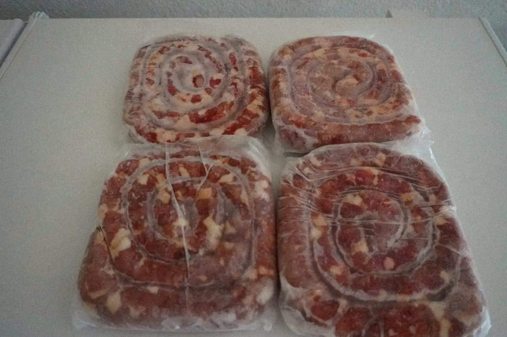
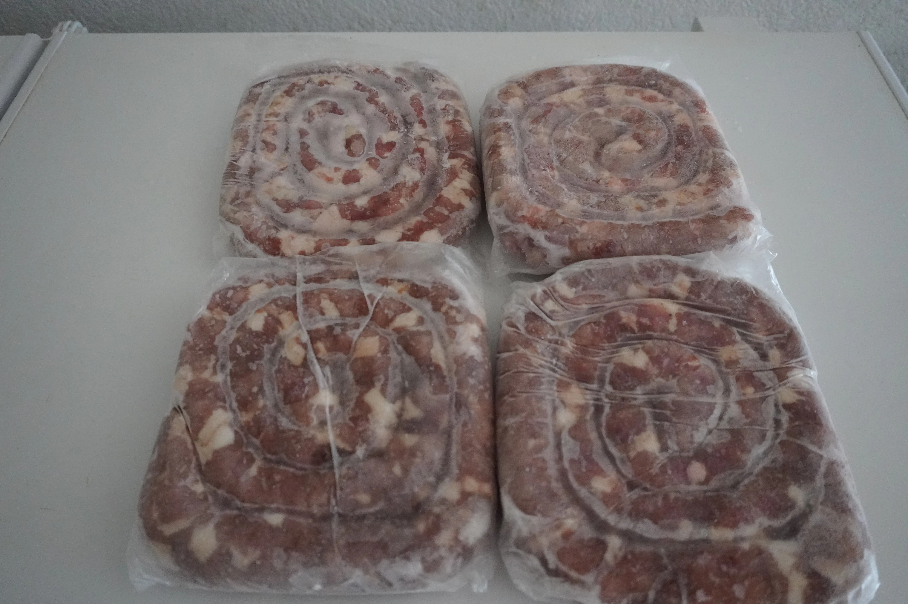
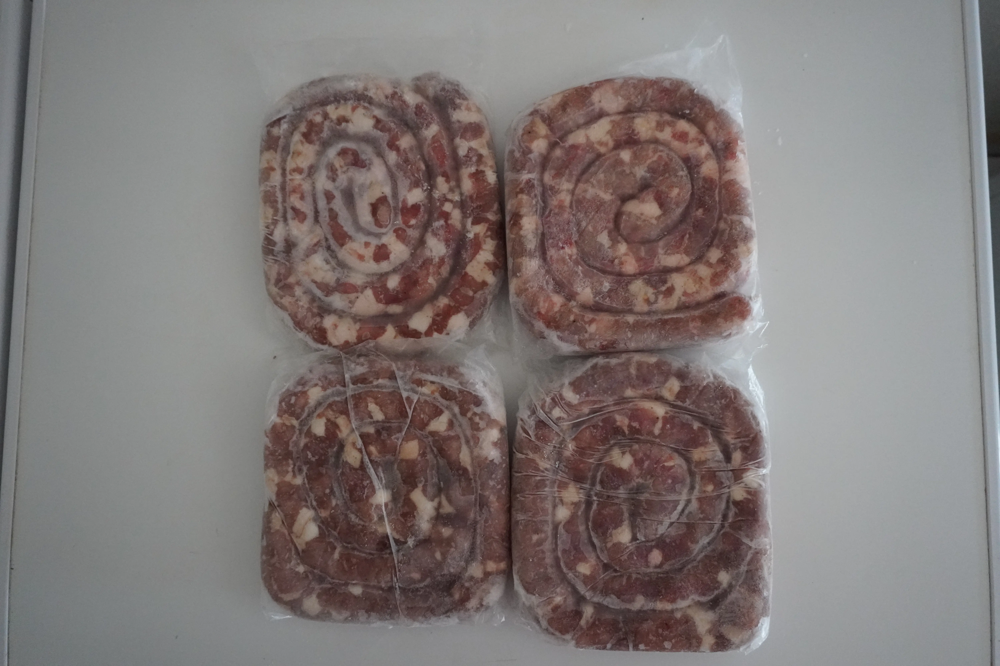

Linguiça de Porco Caseira
Produção própria — Tempero da roça
Escolha a Variante:
Retire na loja: R. Bom Jardim, 379 — Centro, Cáceres.
Linguiça de Porco Caseira: O Sabor Autêntico da Roça
Na Peixaria Rio Paraguai, a linguiça de porco caseira é muito mais do que um embutido — é uma tradição que passa de geração em geração. Todo o processo começa na escolha da matéria-prima: utilizamos exclusivamente carne de porco caipira criado solto, alimentado com ração natural e sem hormônios de crescimento. Essa escolha faz toda a diferença na textura e no sabor final do produto, resultando em uma linguiça suculenta que nenhuma versão industrial consegue replicar.
Tempero na Medida Certa
A receita de tempero é guardada a sete chaves e foi aperfeiçoada ao longo dos anos. A base leva alho fresco amassado, sal na proporção certa, pimenta-do-reino moída na hora. Na versão apimentada, adicionamos pimentas cumari e malagueta cultivadas por nós, que entregam um ardume equilibrado — presente no paladar, mas sem mascarar o sabor da carne. O resultado é um produto de sabor redondo e personalidade marcante.
Artesanal do Começo ao Fim
Diferente das linguiças industriais, que utilizam estabilizantes, corantes, antioxidantes sintéticos e excesso de gordura de baixa qualidade, a nossa é feita apenas com carne, gordura natural do próprio porco e temperos. O tripa usado no enchouriçamento é natural, garantindo a crocância característica ao ser grelhada ou frita. Cada metro de linguiça passa por inspeção manual antes de ser embalado a vácuo, preservando o sabor e a validade sem adição de conservantes artificiais.
Seja para um churrasco de fim de semana, um feijão tropeiro reforçado ou uma marmita caprichada no dia a dia, a Linguiça de Porco Caseira da Peixaria Rio Paraguai entrega sabor de verdade. Encomende pelo WhatsApp e escolha entre a tradicional e a apimentada — ou leve as duas, porque uma não é suficiente.